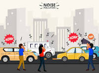
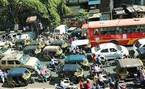

Discover the causes, effects, and solutions to address noise pollution
Noise pollution refers to the excessive or harmful levels of noise in the environment, which can cause discomfort, stress, and damage to human health and wildlife.
Noise pollution is caused by a variety of human activities and environmental factors:
Noise pollution has numerous adverse effects on human health and the environment:
| Source | Before (dB) | After (dB) |
|---|---|---|
| Traffic | 70 dB |
|
| Construction | 80 dB |
|
| Industrial Activities | 75 dB |
|
| Public Events | 85 dB |
|